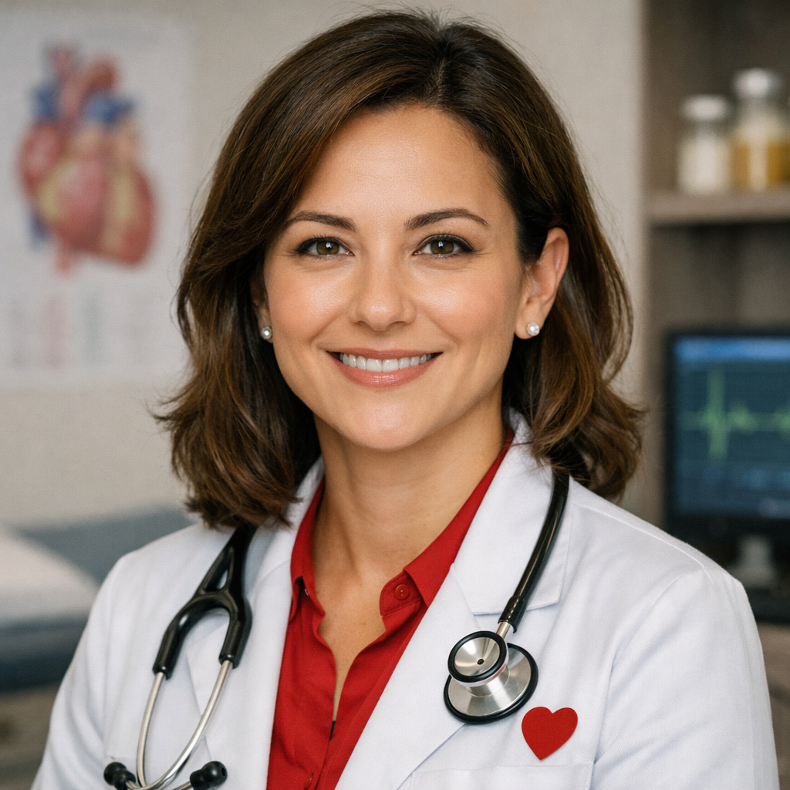
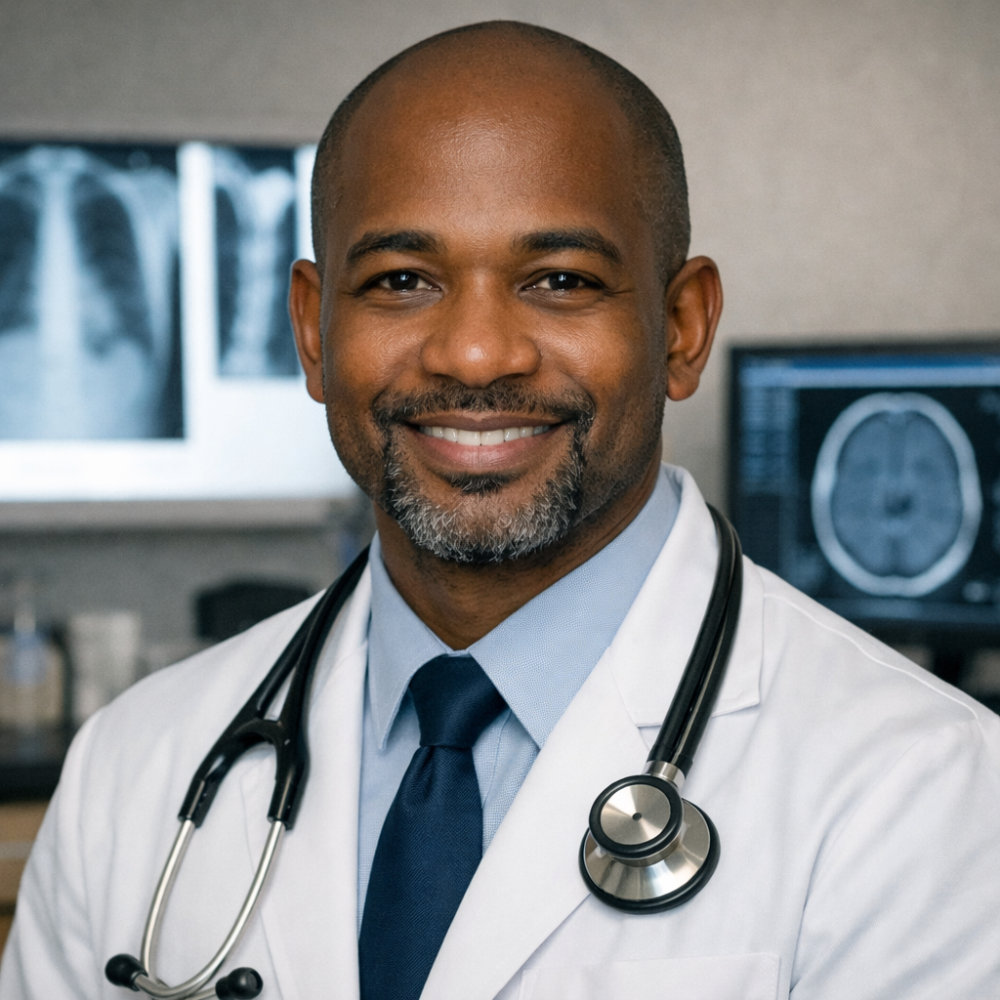
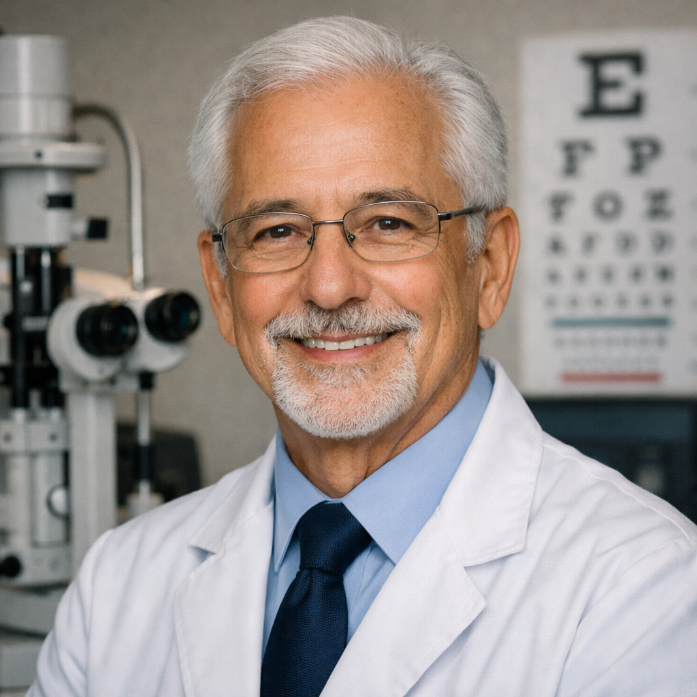

Equipe
Nossa equipe é composta por profissionais altamente qualificados e dedicados ao cuidado com sua saúde. Contamos com médicos experientes, enfermeiros treinados, técnicos de laboratório e nutricionistas que trabalham em conjunto para oferecer o melhor atendimento. Todos os nossos profissionais possuem certificações e estão sempre atualizados com as melhores práticas da medicina moderna. Estamos comprometidos em proporcionar um atendimento humanizado, acolhedor e de qualidade para cada um de nossos pacientes.
Especialidades
Clínica geral
Dr. Rafael Kimura
Dr. Rafael Kimura é um médico dedicado e empático, conhecido por sua abordagem humanizada e pela atenção aos detalhes em cada consulta. Formado pela Universidade de São Paulo, ele possui mais de dez anos de experiência em atendimento ambulatorial e medicina preventiva. Seu foco está em promover o bem-estar integral dos pacientes, combinando conhecimento técnico com escuta ativa e orientação personalizada. No consultório, Dr. Kimura valoriza a comunicação clara e o vínculo de confiança, acreditando que compreender o estilo de vida e as necessidades individuais é essencial para um tratamento eficaz.
Cardiologia
Dra. Helena Duarte
Dra. Helena Duarte é uma profissional reconhecida por sua precisão técnica e empatia no cuidado com pacientes que enfrentam doenças cardiovasculares. Formada pela Universidade Federal de Minas Gerais, ela possui especialização em cardiologia clínica e preventiva, com foco em promover hábitos saudáveis e reduzir riscos cardíacos. Com mais de quinze anos de experiência, Dra. Helena combina conhecimento científico atualizado com uma abordagem acolhedora, explicando cada etapa do tratamento de forma clara e acessível. Sua missão é ajudar os pacientes a compreender o coração não apenas como um órgão vital, mas como o centro do equilíbrio entre corpo e mente.

Radiologia
Dr. Kwame Okoro
Dr. Kwame Okoro é um radiologista altamente qualificado, conhecido por sua precisão diagnóstica e atenção aos detalhes nas imagens médicas. Nascido em Lagos, Nigéria, ele formou-se em Medicina pela Universidade de Ibadan e especializou-se em Radiologia Diagnóstica e Intervencionista. Com mais de doze anos de experiência, Dr. Okoro combina tecnologia avançada com uma abordagem humana, explicando resultados de forma clara e acessível aos pacientes. Seu compromisso é utilizar a imagem como ferramenta para promover diagnósticos precoces e tratamentos eficazes, sempre com empatia e profissionalismo.

Oftalmologia
Dr. Samuel Nogueira
Dr. Samuel Nogueira é um oftalmologista experiente, com mais de quarenta anos dedicados à saúde ocular e à prevenção de doenças da visão. Formado pela Universidade Federal do Rio de Janeiro, ele construiu uma carreira marcada pela precisão técnica e pela sensibilidade no atendimento. Conhecido por seu olhar sereno e voz calma, Dr. Nogueira acredita que enxergar bem é enxergar a vida com qualidade — e por isso dedica-se a orientar seus pacientes sobre cuidados diários e avanços tecnológicos na área oftalmológica. Mesmo após décadas de prática, mantém o entusiasmo de quem ainda se encanta com cada novo diagnóstico e cada paciente que volta a ver o mundo com clareza.

Psiquiatria
Dra. Alessandra Silva
Dra. Alessandra Silva é uma jovem psiquiatra reconhecida por sua abordagem acolhedora e moderna no cuidado da saúde mental. Formada pela Universidade Federal da Bahia, ela combina conhecimento científico com empatia e escuta ativa, criando um ambiente seguro para seus pacientes explorarem emoções e desafios. Com especialização em transtornos de ansiedade e depressão, Dra. Alessandra acredita que o tratamento vai além da medicação — envolve autoconhecimento, equilíbrio e diálogo. Sua prática reflete um compromisso genuíno com o bem-estar emocional e a valorização da diversidade humana.